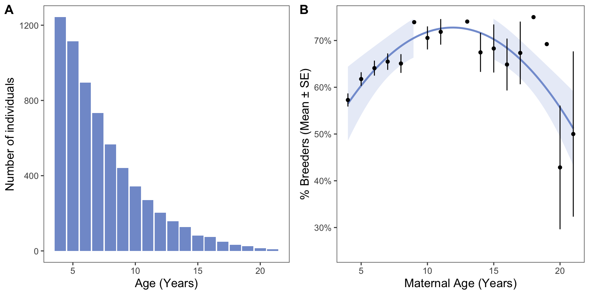
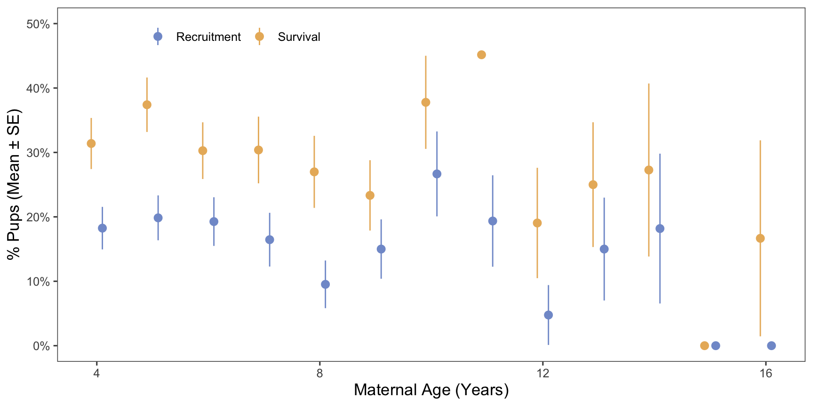
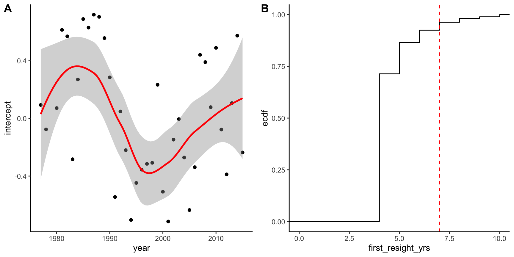
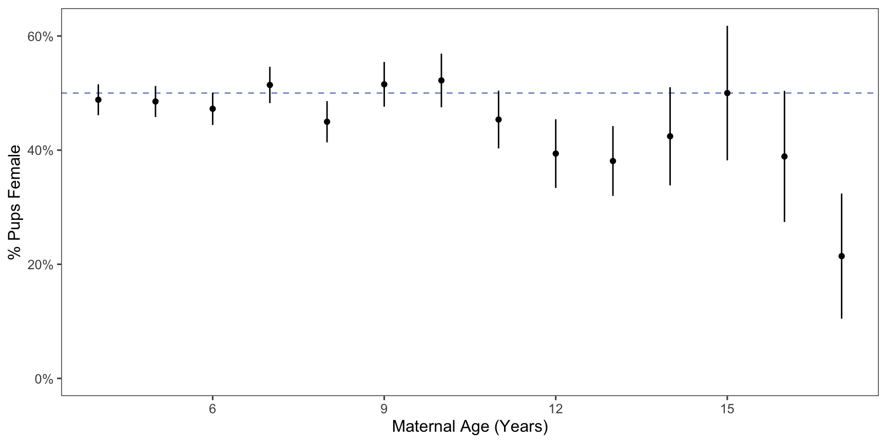
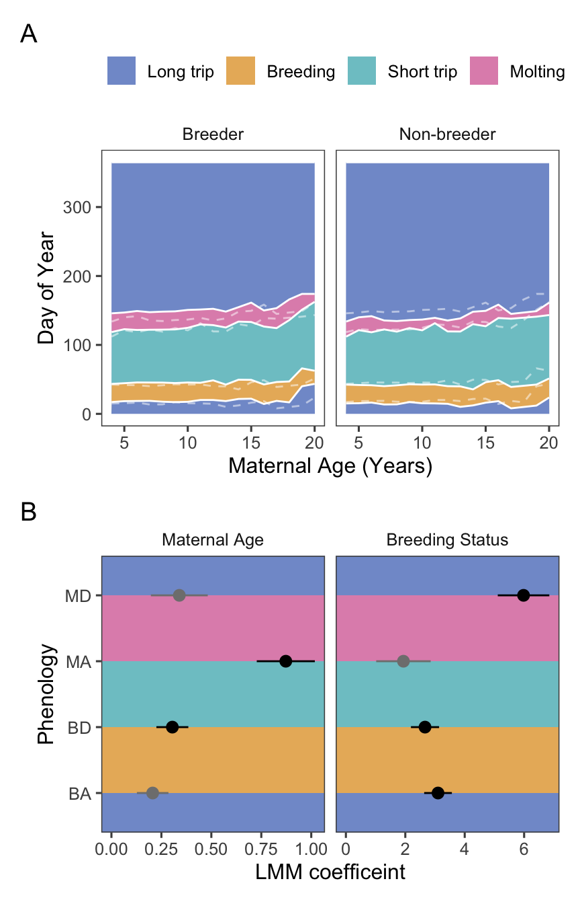

Elephant seal reproductive success declines with age.
Reproductive declines persist to the next generation (maternal effect senescence).
Seal phenology is shifted later for older animals and breeders.
Note: This paper is similar to another paper about polar bears (Ursus maritimus)(Naciri et al. 2022).
Results
H1: Age distribution and breeding status
We predicted that breeding success would decline with age. We found that breeding success increases to prime age, then decreases at older ages (Figure 1).
Note: statistics for increase in inter-birth interval?

Figure 1: A: Age structure of northern elephant seals at Año Nuevo. B: Percentage of each age class that were observed breeding.
Panel B shown with axis constrained below.
Figure 2: B: Percentage of each age class that were observed breeding, with axes constrained.
To test the quadratic fit of the model:
Generalized linear mixed model fit by maximum likelihood (Laplace
Approximation) [glmerMod]
Family: binomial ( logit )
Formula: observed_int ~ poly(age, 2) + (1 | animalID) + (1 | year)
Data: sealdat
AIC BIC logLik deviance df.resid
6841.1 6874.9 -3415.5 6831.1 6370
Scaled residuals:
Min 1Q Median 3Q Max
-3.8634 -0.7061 0.4530 0.6307 7.1131
Random effects:
Groups Name Variance Std.Dev.
animalID (Intercept) 0.409 0.6395
year (Intercept) 5.115 2.2616
Number of obs: 6375, groups: animalID, 1755; year, 54
Fixed effects:
Estimate Std. Error z value Pr(>|z|)
(Intercept) -0.6800 0.3243 -2.097 0.036021 *
poly(age, 2)1 -10.1019 2.6008 -3.884 0.000103 ***
poly(age, 2)2 -11.3457 2.4372 -4.655 3.24e-06 ***
---
Signif. codes: 0 '***' 0.001 '**' 0.01 '*' 0.05 '.' 0.1 ' ' 1
Correlation of Fixed Effects:
(Intr) p(,2)1
poly(ag,2)1 0.025
poly(ag,2)2 -0.008 -0.066
H2: Maternal effect senescence
We predicted that reproductive declines would carry over to the next generation - that is, pups born to older mothers would have decreased survival and recruitment success.
We found that neither pup survival nor recruitment is significantly affected by maternal age (Figure 3).
We reject our hypothesis: reproductive declines do not persist to the next generation, and there is no evidence of maternal effect senescence.
To do:Add sample sizes to the plot because they are different than Figure 1.Do I need to do this if I have the sample sizes in the manuscript?
Note:Try to plot these quadraticlly??

Figure 3: Pup survival decreases slightly, but survival and recruitment are not significantly affected by maternal age.
Results of the Pup Survival model, with individual and year as random effects:
Generalized linear mixed model fit by maximum likelihood (Laplace
Approximation) [glmerMod]
Family: binomial ( logit )
Formula: pup_survived ~ age + (1 | animalID) + (1 | year)
Data: surv_dat
AIC BIC logLik deviance df.resid
1826.7 1848.1 -909.4 1818.7 1533
Scaled residuals:
Min 1Q Median 3Q Max
-0.9927 -0.6399 -0.5085 1.1184 2.3568
Random effects:
Groups Name Variance Std.Dev.
animalID (Intercept) 0.1050 0.3240
year (Intercept) 0.3119 0.5585
Number of obs: 1537, groups: animalID, 685; year, 38
Fixed effects:
Estimate Std. Error z value Pr(>|z|)
(Intercept) -0.88901 0.18621 -4.774 1.8e-06 ***
age -0.01213 0.01974 -0.615 0.539
---
Signif. codes: 0 '***' 0.001 '**' 0.01 '*' 0.05 '.' 0.1 ' ' 1
Correlation of Fixed Effects:
(Intr)
age -0.768
Results of the Pup Recruitment model, with individual and year as random effects:
Note: Getting error “boundary (singular) fit” - possibly not enough data to fit this model? I.e., too few recruits. Also, need to apply 7 year filter to this one too????
Generalized linear mixed model fit by maximum likelihood (Laplace
Approximation) [glmerMod]
Family: binomial ( logit )
Formula: puprecruited ~ age + (1 | animalID) + (1 | year)
Data: filter(sealdat, year > 1984)
AIC BIC logLik deviance df.resid
933.2 955.5 -462.6 925.2 1950
Scaled residuals:
Min 1Q Median 3Q Max
-0.4250 -0.2763 -0.2256 -0.1738 6.0995
Random effects:
Groups Name Variance Std.Dev.
animalID (Intercept) 0.0000 0.0000
year (Intercept) 0.5873 0.7663
Number of obs: 1954, groups: animalID, 855; year, 39
Fixed effects:
Estimate Std. Error z value Pr(>|z|)
(Intercept) -2.74962 0.29135 -9.437 <2e-16 ***
age -0.02611 0.03098 -0.843 0.399
---
Signif. codes: 0 '***' 0.001 '**' 0.01 '*' 0.05 '.' 0.1 ' ' 1
Correlation of Fixed Effects:
(Intr)
age -0.791
optimizer (Nelder_Mead) convergence code: 0 (OK)
boundary (singular) fit: see help('isSingular')
The model of Survival ~ Maternal age was significant before we treated Year as a random effect. Was that because pups born earlier in the study had more time to be seen again (i.e., a sampling artifact?) If so, the plot of the random effect of year should have a negative slope.
[1] 80

Figure 4: A: Plotting the intercept of the random effect of year shows that variation in ocean conditions is likely driving patterns in survival, rather than age of mother. B: 95% of seals that survived were resighted within ~seven years of their birth.
There is a drop off in recent years that seems to support the idea that recent years have a sampling bias, but the earlier portion suggests that overall the variation is caused by ocean conditions and not sampling. See the Cohort paper!
If not maternal effect senescence, then perhaps a strategy shift?
H3a: Changes in pup sex ratio with increased maternal age
We found that as maternal age increases, pup sex skews slightly towards males.

Figure 5: Pup sex skews slightly towards males with increasing maternal age, but it’s not significant.
Results of the model for pup sex ratio:
Generalized linear mixed model fit by maximum likelihood (Laplace
Approximation) [glmerMod]
Family: binomial ( logit )
Formula: as.factor(pupsex) ~ age + (1 | animalID) + (1 | year)
Data: filter(sealdat, pupsex %in% c("M", "F"), age < 18)
AIC BIC logLik deviance df.resid
2784.4 2806.9 -1388.2 2776.4 2006
Scaled residuals:
Min 1Q Median 3Q Max
-1.2217 -1.0247 0.8353 0.9453 1.0843
Random effects:
Groups Name Variance Std.Dev.
animalID (Intercept) 0.03697 0.1923
year (Intercept) 0.02683 0.1638
Number of obs: 2010, groups: animalID, 885; year, 46
Fixed effects:
Estimate Std. Error z value Pr(>|z|)
(Intercept) -0.10400 0.12623 -0.824 0.410
age 0.02798 0.01572 1.780 0.075 .
---
Signif. codes: 0 '***' 0.001 '**' 0.01 '*' 0.05 '.' 0.1 ' ' 1
Correlation of Fixed Effects:
(Intr)
age -0.905
H3b: Changes to annual cycle timing with increased maternal age
We predicted that seals would shift the timing of their annual cycle.
We found that as maternal age increases, there are slight adjustments to the timing of life history events. These events (breeding/molting arrival/departure) are typically shifted later for older animals (?@fig-annual_timing).
Note:Add in illustrator the colors between each phenological variable, so people can understand the timing. Fix the labels on panel B and write a caption.
phenology
coef_age
signif_age
coef_breeder
signif_breeder
BA
0.21 +- 0.08
p = 0.009 (FALSE)
3.1 +- 0.47
p = 0 (TRUE)
BD
0.3 +- 0.08
p = 1e-04 (TRUE)
2.66 +- 0.47
p = 0 (TRUE)
MA
0.87 +- 0.15
p = 0 (TRUE)
1.94 +- 0.92
p = 0.0347 (FALSE)
MD
0.34 +- 0.14
p = 0.0171 (FALSE)
5.98 +- 0.87
p = 0 (TRUE)
Figure 6: Phenology caption

Figure 7: Phenology caption
References
Naciri, Marwan, Jon Aars, Marie-Anne Blanchet, Olivier Gimenez, and Sarah Cubaynes. 2022. “Reproductive Senescence in Polar Bears in a Variable Environment.”Frontiers in Ecology and Evolution 10 (October). https://doi.org/10.3389/fevo.2022.920481.
Source Code
---title: "Elephant Seal Age JAE Intraspecific Variation"format: html: echo: false fig-width: 4.5 fig-height: 4.5 code-fold: true code-tools: true warning: falseeditor: visualbibliography: references.bib---```{r}#| label: setup#| include: false library(ggthemes)library(cowplot)library(lme4)library(lmerTest) # Loading this library will automatically append p-values to lmer models estimated using something called Satterthwaite's methodlibrary(merTools)library(tidyverse)library(patchwork)sealdat <-read_csv(here::here("data/raw/128L pull 2023_06_29.csv"), show_col_types =FALSE) %>%mutate(observed =if_else(observed =="B", "Breeder", "Non-breeder"), observed_int =if_else(observed =="Breeder", 1, 0), pup_survived = pupseeneveragain >0) %>%filter(age >3)```# IntroductionOur hypotheses:1. Elephant seal reproductive success declines with age.2. Reproductive declines persist to the next generation (maternal effect senescence). 3. Seal phenology is shifted later for older animals and breeders.**Note**: *This paper is similar to another paper about polar bears (*Ursus maritimus*)* [@naciri2022].# Results### H1: Age distribution and breeding statusWe predicted that breeding success would decline with age. We found that breeding success increases to prime age, then decreases at older ages (@fig-age_dist).**Note**: *statistics for increase in inter-birth interval?*```{r}#| label: fig-age_dist#| fig-cap: "A: Age structure of northern elephant seals at Año Nuevo. B: Percentage of each age class that were observed breeding."#| fig-width: 9#Age distribution panel A age_dist <- sealdat %>%filter(age <22) %>%group_by(age) %>%count(age) %>%ggplot(aes(x = age, y = n)) +geom_col(fill ="#829BD1") +labs(x ="Number of individuals", y ="Age (Years)") +theme_few()#Panel B: percentage of each age class that were breeders or nonbreedersbreed_nonbreed <- sealdat %>%group_by(age) %>%summarize(n_observed =sum(!is.na(observed)), perc_breed =sum(observed =="Breeder") / n_observed, se = (perc_breed * (1- perc_breed) / n_observed)^0.5) %>%filter(age <22) %>%ggplot(aes(x = age, y = perc_breed)) +stat_smooth(method ="lm", formula = y ~poly(x , 2), se =TRUE, color ="#849ED5", fill ="#C8D3ED") +geom_point() +geom_errorbar(aes(ymin = perc_breed - se, ymax = perc_breed + se), width =0) +scale_y_continuous(labels = scales::percent, limits =c(0, 1)) +labs(x ="Maternal Age (Years)", y ="% Breeders") +theme_few()plot_grid(age_dist, breed_nonbreed, nrow =1, labels ="AUTO")```Panel B shown with axis constrained below.```{r}#| label: fig-age_dist2#| fig-cap: "B: Percentage of each age class that were observed breeding, with axes constrained."#| fig-width: 9#Panel B: percentage of each age class that were breeders or nonbreedersbreed_nonbreed <- sealdat %>%group_by(age) %>%summarize(n_observed =sum(!is.na(observed)), perc_breed =sum(observed =="Breeder") / n_observed, se = (perc_breed * (1- perc_breed) / n_observed)^0.5) %>%filter(n_observed >2) %>%ggplot(aes(x = age, y = perc_breed)) +stat_smooth(method ="lm", formula = y ~poly(x , 2), se =TRUE, color ="#849ED5", fill ="#C8D3ED") +geom_point() +geom_errorbar(aes(ymin = perc_breed - se, ymax = perc_breed + se), width =0) +scale_y_continuous(labels = scales::percent, limits =c(.25, .75)) +labs(x ="Maternal Age (Years)", y ="% Breeders") +theme_few()breed_nonbreed ```To test the quadratic fit of the model:```{r}summary(glmer(observed_int ~poly(age, 2) + (1| animalID) + (1| year),data = sealdat, family ="binomial"))```### H2: Maternal effect senescenceWe predicted that reproductive declines would carry over to the next generation - that is, pups born to older mothers would have decreased survival and recruitment success.We found that neither pup survival nor recruitment is significantly affected by maternal age (@fig-repro_age).We reject our hypothesis: reproductive declines do not persist to the next generation, and there is no evidence of maternal effect senescence.**To do:** *Add sample sizes to the plot because they are different than Figure 1.* *Do I need to do this if I have the sample sizes in the manuscript?***Note:** *Try to plot these quadraticlly??*```{r}#| label: fig-repro_age#| fig-cap: "Pup survival decreases slightly, but survival and recruitment are not significantly affected by maternal age."#| fig-width: 9#B Pup survival and recruitment doesn't change with increased maternal age.pup_surv_recruit <- sealdat %>%mutate(pup_surv =ifelse(pupseeneveragain >0, 1, 0)) %>%filter(pupsex =="F", pupyearborn <2016) %>%group_by(age) %>%summarize(n_surv =sum(!is.na(pup_surv)),mean_surv =sum(pup_surv, na.rm =TRUE) / n_surv, se_surv = (mean_surv * (1- mean_surv) / n_surv)^0.5,n_recruit =sum(!is.na(puprecruited)), mean_recruit =sum(puprecruited, na.rm =TRUE) / n_recruit, se_recruit = (mean_recruit * (1- mean_recruit) / n_recruit)^0.5) %>%pivot_longer(cols =c(mean_surv, se_surv, mean_recruit, se_recruit), names_to =c("stat", "metric"), names_pattern ="(.*)_(.*)") %>%pivot_wider(names_from ="stat", values_from ="value") %>%mutate(low = mean - se, high = mean + se, age = age +ifelse(metric =="surv", -0.1, 0.1), metric =factor(metric, levels =c("recruit", "surv"), labels =c("Recruitment", "Survival"))) %>%filter(n_surv >5) %>%ggplot(aes(x = age, y = mean, color = metric)) +geom_pointrange(aes(ymin = low, ymax = high)) +scale_color_manual(values =c("#829BD1", "#E9B668")) +scale_y_continuous(labels = scales::percent, limits =c(0, .5)) +labs(x ="Maternal Age (Years)", y ="% Pups") +theme_few() +theme(legend.position =c(0.1,0.97), legend.justification =c(0,1), legend.title =element_blank(), legend.direction ="horizontal")pup_surv_recruit```Results of the Pup Survival model, with individual and year as random effects:```{r}#Panel B Survival Modelsurv_dat <- sealdat %>%filter(pupyearborn <2016)pup_survival_model <-glmer(pup_survived ~ age + (1| animalID) + (1| year),data = surv_dat,family ="binomial")summary(pup_survival_model)```Results of the Pup Recruitment model, with individual and year as random effects:**Note**: *Getting error "boundary (singular) fit" - possibly not enough data to fit this model? I.e., too few recruits. Also, need to apply 7 year filter to this one too????*```{r}#Panel B Recruitment Modelpup_recruit_model <-glmer(puprecruited ~ age + (1| animalID) + (1| year),data =filter(sealdat, year >1984), family ="binomial")summary(pup_recruit_model)```The model of Survival \~ Maternal age was significant before we treated Year as a random effect. Was that because pups born earlier in the study had more time to be seen again (i.e., a sampling artifact?) If so, the plot of the random effect of year should have a negative slope.```{r}#| label: fig-surv_bias#| fig-cap: "A: Plotting the intercept of the random effect of year shows that variation in ocean conditions is likely driving patterns in survival, rather than age of mother. B: 95% of seals that survived were resighted within ~seven years of their birth."#| fig-width: 9year_ranef <-ranef(pup_survival_model)$year %>%as_tibble(rownames ="year") %>%mutate(year =as.numeric(year)) %>%rename(intercept =`(Intercept)`)year_ranef_plot <-ggplot(year_ranef, aes(year, intercept)) +geom_point() +geom_smooth(method ="loess", formula = y ~ x,color ="red") +theme_classic()survival_bias <- sealdat %>%group_by(animalID) %>%summarize(first_resight_yrs =min(age))survival95 <-quantile(survival_bias$first_resight_yrs, 0.95)#n for 95% quantilesum(survival_bias$first_resight_yrs >7)survival_bias_plot <-ggplot(survival_bias, aes(x = first_resight_yrs)) +stat_ecdf() +geom_vline(xintercept = survival95, linetype ="dashed", color ="red") +scale_x_continuous(limits =c(0, 10)) +theme_classic()plot_grid(year_ranef_plot, survival_bias_plot, nrow =1, labels ="AUTO")```There is a drop off in recent years that seems to support the idea that recent years have a sampling bias, but the earlier portion suggests that overall the variation is caused by ocean conditions and not sampling. See the Cohort paper!If not maternal effect senescence, then perhaps a strategy shift?### H3a: Changes in pup sex ratio with increased maternal ageWe found that as maternal age increases, pup sex skews slightly towards males.```{r}#| label: fig-sex_ratio#| fig-cap: "Pup sex skews slightly towards males with increasing maternal age, but it's not significant."#| fig-width: 9#A: Pup sex shifts towards males with increasing maternal age, but it's not significant.pup_sex <- sealdat %>%filter(pupsex %in%c("M", "F"), age <18) %>%group_by(age, pupsex) %>%count(pupsex) %>%pivot_wider(values_from = n, names_from = pupsex) %>%mutate(num = M + F,percf = F / num,se = (percf * (1- percf) / num)^0.5) %>%ggplot(aes(x = age, y = percf, weight = num)) +geom_hline(yintercept =0.5, lty =2, color ="#829BD1") +geom_point() +geom_errorbar(aes(ymin = percf - se, ymax = percf + se), width =0) +scale_y_continuous(labels = scales::percent, limits =c(0, NA)) +labs(x ="Maternal Age (Years)", y ="% Pups Female") +theme_few()pup_sex```Results of the model for pup sex ratio:```{r}pup_sex_mod <-glmer(as.factor(pupsex) ~ age + (1| animalID) + (1| year),data =filter(sealdat, pupsex %in%c("M", "F"), age <18), family ="binomial")summary(pup_sex_mod)```### H3b: Changes to annual cycle timing with increased maternal ageWe predicted that seals would shift the timing of their annual cycle.We found that as maternal age increases, there are slight adjustments to the timing of life history events. These events (breeding/molting arrival/departure) are typically shifted later for older animals (@fig-annual_timing).```{r}seal_phenology <- sealdat %>%mutate(BA = firstobsbreeddoy, BD = firstobsbreeddoy + breeddur, MA = lastobsmoltdoy - moltdur, MD = lastobsmoltdoy) %>%drop_na(age, BA, BD, MA, MD)phenology_n <-unique(seal_phenology$animalID)timing_summary <- seal_phenology %>%group_by(age, observed) %>%summarize(across(BA:MD, mean), .groups ="drop") %>%pivot_longer(cols =-c(age, observed), names_to ="event", values_to ="doy") %>%group_by(age, observed) %>%group_modify(\(data, keys) {tibble(event =c("Long trip", "Breeding", "Short trip", "Molting", "longtrip2"),doy =c(data$doy, 365) -c(0, data$doy)) }) %>%ungroup() %>%mutate(event =factor(event, levels =c("Long trip", "Breeding", "Short trip", "Molting", "longtrip2")))timing_summary_flipped <- timing_summary %>%mutate(observed =ifelse(observed =="Breeder","Non-breeder","Breeder")) %>%filter(event !="longtrip2")```**Note:** *Add in illustrator the colors between each phenological variable, so people can understand the timing. Fix the labels on panel B and write a caption.*```{r}#| label: fig-phenology#| fig-height: 9#| fig-cap: "Phenology caption"phen_plot1 <-ggplot(timing_summary, aes(x = age, y = doy, fill = event)) +geom_area(position =position_stack(reverse =TRUE),color =NA) +geom_line(position =position_stack(reverse =TRUE),color ="white") +geom_line(data = timing_summary_flipped,position =position_stack(reverse =TRUE),color ="white",linetype ="dashed",alpha =0.5) +scale_fill_discrete(type =c("#829BD1", "#E9B668", "#7EC6CC", "#E091B9", "#829BD1"),breaks =c("Long trip", "Breeding", "Short trip", "Molting")) +facet_grid(cols =vars(observed)) +labs(x ="Maternal Age (Years)", y ="Day of Year") +theme_few()# Utility functions for model fitting and coefficient extractionfit_model <-function(dat) {lmer(doy ~ age + observed + (1| animalID) + (1| year), data = dat)}extract_estimate <-function(models, param) {map_dbl(models, \(mod) summary(mod)$coefficients[param, "Estimate"])}extract_stderr <-function(models, param) {map_dbl(models, \(mod) summary(mod)$coefficients[param, "Std. Error"])}extract_pval <-function(models, param) {map_dbl(models, \(mod) summary(mod)$coefficients[param, "Pr(>|t|)"])}# This data frame contains a model for each phenological variable w.r.t. agephenology_models <- seal_phenology %>%pivot_longer(BA:MD, names_to ="phenology", values_to ="doy") %>%select(phenology, observed, doy, age, animalID, year) %>%mutate(observed =factor(observed, levels =c("Non-breeder", "Breeder"))) %>%nest(model_data =c(doy, age, observed, animalID, year)) %>%mutate(model =map(model_data, fit_model),age_coef =extract_estimate(model, "age"),age_stderr =extract_stderr(model, "age"),age_pval =extract_pval(model, "age"),age_signif = age_pval *8<0.05,breeder_coef =extract_estimate(model, "observedBreeder"),breeder_stderr =extract_stderr(model, "observedBreeder"),breeder_pval =extract_pval(model, "observedBreeder"),breeder_signif = breeder_pval *8<0.05,)phen_wrapped <-tibble(event_begin =c(-Inf, 1:4),event_end =c(1:4, Inf),event = timing_summary$event[0:5])phen_plot2 <- phenology_models %>%select(-c(model_data, model)) %>%pivot_longer(c(ends_with("coef"), ends_with("stderr"), ends_with("signif")),names_to =c("param", "metric"),names_sep ="_",values_to ="value") %>%pivot_wider(names_from = metric, values_from = value) %>%mutate(signif =as.logical(signif), param =factor(param, labels =c("Maternal Age (Years)", "Breeding Status"))) %>%ggplot(aes(x = coef, y = phenology)) +# Prevent geom_rect() from establishing a continuous y-axis scalegeom_point(alpha =0) +geom_rect(aes(xmin =-Inf, xmax =Inf,ymin = event_begin, ymax = event_end,fill = event), phen_wrapped,inherit.aes =FALSE) +geom_pointrange(aes(xmin = coef - stderr, xmax = coef + stderr,color = signif)) +scale_color_manual(values =c("FALSE"="grey50", "TRUE"="black"),guide ="none") +scale_fill_discrete(type =c("#829BD1", "#E9B668", "#7EC6CC", "#E091B9", "#829BD1"),breaks =c("Long trip", "Breeding", "Short trip", "Molting")) +expand_limits(x =0) +facet_grid(cols =vars(param), scales ="free_x") +xlab("LMM coefficeint") +ylab("Phenology") +theme_few()phen_plot1 / phen_plot2 +plot_annotation(tag_levels ="A") +plot_layout(guides ="collect") &theme(legend.position ="top",legend.title =element_blank())phenology_models %>%select(-c(model_data, model)) %>%pivot_longer(age_coef:breeder_signif, names_to =c("param", "metric"),names_sep ="_",values_to ="value") %>%pivot_wider(names_from = metric, values_from = value) %>%mutate(coef =str_glue("{round(coef, 2)} +- {round(stderr, 2)}"),signif =str_glue("p = {round(pval, 4)} ({signif == 1})")) %>%select(-c(stderr, pval)) %>%pivot_wider(names_from = param, values_from =c(coef, signif)) %>%select(phenology, ends_with("age"), ends_with("breeder")) %>% knitr::kable()```